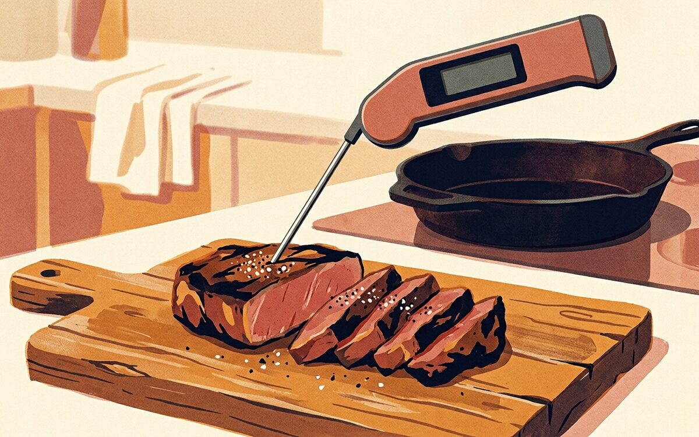

As an Amazon Associate I earn from qualifying purchases. This site contains sponsored product links. Prices and availability are shown on Amazon — check Amazon for current details. Full disclosure
Guide · Thermometer accuracy · Season: Everyday
Your thermometer claims ±0.5°F. The five-minute ice-cup check tells you what you actually have
Amazon listings quote tight accuracy numbers; USDA FSIS says most food thermometers read within 2 to 4°F. Here is the calibration check you can run at your own sink, and what to do with the offset.
By the ShopNow Kitchen Desk · Published 2026-11-20 · Updated 2026-11-20 · 3 min read · This category · Sources

Editorial illustration of a folding instant-read over a sliced steak. Not a product photograph, and not a measurement of any unit on this shelf.
A thermometer listing is the rare product page where the headline number is a claim about physics. One unit on this shelf states ±0.5℉ accuracy in its title. Nothing on that page lets you check it — but two minutes with a glass of ice water does, and the method is published by the same agency that sets the temperature targets you are cooking to.
What the government guidance says about accuracy claims
USDA FSIS is blunt about the realistic band: “Most food thermometers will give an accurate reading within 2 to 4 degrees F (see Calibration).” That is a 2–4°F tolerance around the reading, on either side of it — wider than the ±0.5℉ figure a listing may carry.
Two consequences, and neither is about brand:
An accuracy figure in a listing is a specification the seller published, not a measurement you inherit. Nobody here has put either of these instruments in a bath.
Tolerance matters most where the target is a safety line rather than a preference. All poultry is a minimum of 165°F; 3°F of drift is not academic.
The ice-water method, step for step
FSIS documents two calibration checks and calls the ice-water one “best for most thermometers”:
Fill a large glass with ice cubes, add drinking water, and stir well.
Immerse the stem a minimum of 2 inches into the mixture, touching neither the sides nor the bottom of the glass.
Wait a minimum of 30 seconds, and read it without removing the stem from the water.
It should read 32°F. If it does, the thermometer is calibrated; if not, adjust according to the manufacturer's instructions — some dials have a calibration nut underneath.
The boiling-water method is for the high end: bring clean water to a boil, immerse the stem at least 2 inches without touching the pot, wait a minimum of 30 seconds, and expect 212°F at sea level. FSIS adds three caveats worth taking seriously — distilled water for true accuracy, and a boiling point that drops with altitude by at least 2°F and possibly 5°F, with the local Cooperative Extension System office or health department able to give the exact figure for your elevation.
Whether you can do anything about an offset depends on the type of instrument. FSIS's own thermometer-types table records “Cannot be calibrated” for oven-cord thermometers and thermometer-fork combinations, “Some models can be calibrated; check manufacturer's instructions” for thermistors, and “Can be calibrated” for thermocouples. For leave-in wireless units, the same table describes them as designed to remain in the food while cooking, inserted at least 1 inch deep in the thickest part, and “more costly”.
And the sentence most listings will not repeat: “If the thermometer doesn't allow manual calibration, you may need to replace it.”
What the two listings on this shelf claim
Instrument
What the listing states
What the listing does not state
ThermoMaven 1 Sec instant-read
±0.5℉ accuracy, “NIST&NSF Certified”, a 1-second reading and IP67 waterproofing, all wording from the listing title
Whether the unit is user-calibratable, or over what range the ±0.5℉ figure holds
CHEF iQ Sense Gen3 leave-in set
Three ultra-thin probes, WiFi reporting, probes called heat-safe to 1000°F — per the listing title
No accuracy figure was recorded in this site's read of that listing; the 1000°F number is a heat-rating, not an accuracy claim
Both rows are copied from manufacturer listings, with links and the read date below. A blank here means the listing did not state it, not that the figure does not exist anywhere.
What this page cannot tell you. Nobody at this site has run either instrument in ice water, so there is no test result here and none is implied. We quote what the listings claim and what USDA FSIS publishes, and hand you the check. No prices, ratings or review counts appear anywhere on this site: Amazon’s Program Policies restrict static price display, and the numbers move daily.
This is the tool you pick up, stab into the middle of the meat, read and put down. Its whole value is how fast and how accurately it answers one question.
Reading: Accuracy ±0.5°F (NIST & NSF certified per listing)
Decide on what the listing does not say: it states an accuracy figure, and USDA FSIS says most food thermometers read within 2 to 4°F, so the ice-cup check is the part you can do yourself.
The CHEF iQ Sense is a different category of object from a handheld probe: probes that stay in the food, a hub that talks to your phone, and a cook you monitor from another room.
Capacity: 3 probes + hub
Size: 8.43 x 4.69 x 1.93 inches (package); 14.07 ounces
Decide on the leave-in job, not the app: USDA FSIS lists wireless/smart thermometers as designed to remain in the food while cooking, at least 1" deep in the thickest part.
How this page was made. Written from published listings and official guidance, by an editorial desk — not from hands-on use, so no page here claims testing. Every table row links to its source; anything we could not confirm is left blank and listed on Flagged for review. Sponsored links are marked Sponsored.
Get the next comparison — checklist first, hype never.
One email when a new guide publishes.
The field deliberately has no name attribute: with scripting switched off there is no key/value pair for a browser to put into a URL, so an address cannot reach a server request log even in the fallback path.
There is no newsletter running yet, so this control is switched off on purpose: it transmits nothing, stores your address nowhere, and cannot submit a form. A subscription flow needs a provider, a consent record and a retention period first — those are open questions on the questions page, and the disclosure states exactly what this site does and does not collect.